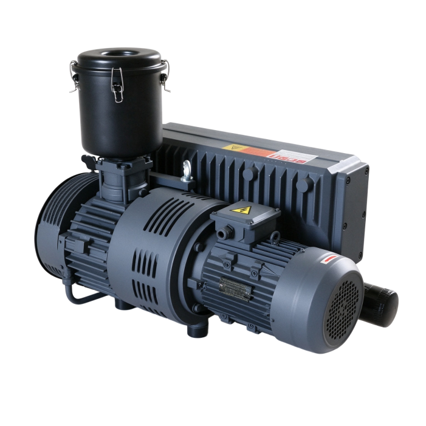

Product Catalog
Select a product to view its specifications, typical applications and enquiry options.
Single-stage Rotary Vane Vacuum Pumps

VR 302
300 / 360 m³/h pumping speed, 7.5 kW motor. Flagship single-stage vane pump for stable medium vacuum supply.

VR 250
250 / 300 m³/h pumping speed, 5.5 / 7.5 kW motor for general industrial evacuation and packaging.

VR 202
200 / 240 m³/h pumping speed, 4.5 kW motor for medium-duty vacuum systems.

VR 160
160 / 190 m³/h pumping speed, 4 kW motor for continuous industrial vacuum supply.

VR 100
100 / 120 m³/h pumping speed, 3 kW motor for compact machinery and automation fixtures.

VR 063
63 / 76 m³/h pumping speed, 2.2 kW motor for small-to-medium vacuum applications.

VR 040
40 / 48 m³/h pumping speed, 1.5 kW motor, compact unit for light-duty evacuation.